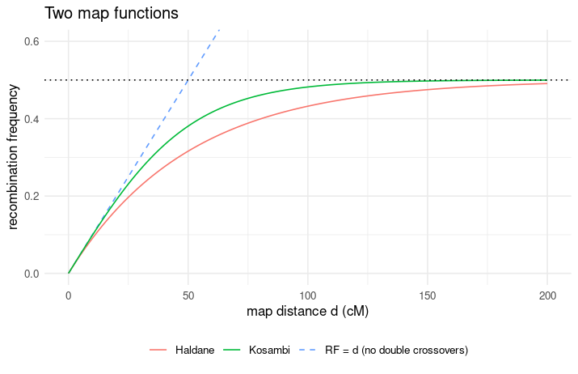
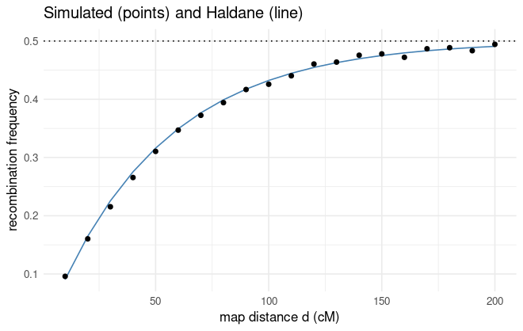

Exercise in R: linkage & recombination
Goal
By the end of this exercise you should be able to:
- compute a recombination frequency from a testcross table with dplyr;
- write R functions with a default argument,
cM_to_rf(d, method = "haldane")andrf_to_cM(rf, method = "haldane"), and call them with and without the argument; - use
map_dbl()to apply a function over a range of map distances, and plot Haldane’s and Kosambi’s map functions; - re-analyse Sturtevant’s original 1913 data, and simulate crossovers with
rpois()to see where Haldane’s function comes from; - test for linkage with
chisq.test().
Before you start
This page builds on the by-hand part of the Exercise, so do that first. You need the packages dplyr, purrr, readr and ggplot2. Download sturtevant1913.csv and save it in a data/ folder of your R project.
library(dplyr)
library(purrr)
library(readr)
library(ggplot2)Tasks
The new idiom today is a function argument with a default value. In function(d, method = "haldane"), d must always be given, but method can be left out: then it is "haldane". You can still write method = "kosambi" to override it. match.arg() checks that the value is one of the allowed choices and stops with a clear error message otherwise (try cM_to_rf(10, "kosambo")). Many R functions you already use work like this: chisq.test(x, p = ...) has a default p (equal proportions), and mean(x, na.rm = FALSE) a default na.rm.
You met map_dbl() in Extensions to Mendel: map_dbl(xs, f) calls f once for each element of xs and returns the results as a numeric vector. Inside it, \(x) ... is a short function of one argument x.
R1. RF from a testcross
The testcross from the lecture (pr and vg in Drosophila; invented numbers):
testcross <- tibble(
phenotype = c("wild type", "purple vestigial", "purple", "vestigial"),
genotype = c("pr+ vg+ / pr vg", "pr vg / pr vg", "pr vg+ / pr vg", "pr+ vg / pr vg"),
type = c("parental", "parental", "recombinant", "recombinant"),
n = c(1170, 1149, 155, 146)
)
testcross
testcross |>
group_by(type) |>
summarise(n = sum(n)) |>
mutate(fraction = n / sum(n))What is the RF? Then change testcross to the maize data of B1 in the exercise and check your answer.
R2. Two map functions, with a default
Write two functions that convert between map distance in centimorgans and RF. Both have the argument method, with Haldane as the default.
cM_to_rf <- function(d, method = "haldane") {
method <- match.arg(method, c("haldane", "kosambi"))
m <- d / 100 # centimorgans -> morgans
if (method == "haldane") {
0.5 * (1 - exp(-2 * m))
} else {
0.5 * tanh(2 * m)
}
}
rf_to_cM <- function(rf, method = "haldane") {
method <- match.arg(method, c("haldane", "kosambi"))
if (method == "haldane") {
m <- -0.5 * log(1 - 2 * rf)
} else {
m <- 0.25 * log((1 + 2 * rf) / (1 - 2 * rf))
}
100 * m # morgans -> centimorgans
}
cM_to_rf(10) # method left out: Haldane
cM_to_rf(10, method = "kosambi")
cM_to_rf(c(1, 10, 50, 100, 200)) # works on a whole vector
rf_to_cM(0.115) # pr-vg
rf_to_cM(0.115, "kosambi") # arguments can also be given by position
rf_to_cM(cM_to_rf(37)) # there and back again
rf_to_cM(0.5)Check your answers to B6 in the exercise with these functions. Why does rf_to_cM(0.5) give Inf?
R3. Plot the map functions with map_dbl()
Compute RF for every distance from 0 to 200 cM with both functions. For Kosambi, the extra argument goes inside a short function \(x) cM_to_rf(x, method = "kosambi").
curves <- tibble(d = 0:200) |>
mutate(haldane = map_dbl(d, cM_to_rf),
kosambi = map_dbl(d, \(x) cM_to_rf(x, method = "kosambi")))
curves |> filter(d %in% c(5, 10, 25, 50, 100, 200))
ggplot(curves, aes(x = d)) +
geom_line(aes(y = d / 100, colour = "RF = d (no double crossovers)"), linetype = "dashed") +
geom_line(aes(y = haldane, colour = "Haldane")) +
geom_line(aes(y = kosambi, colour = "Kosambi")) +
geom_hline(yintercept = 0.5, linetype = "dotted") +
coord_cartesian(ylim = c(0, 0.6)) +
labs(x = "map distance d (cM)", y = "recombination frequency",
colour = NULL, title = "Two map functions") +
theme_minimal() +
theme(legend.position = "bottom")Up to which distance do the three lines agree to within 0.01?
R4. Sturtevant’s 1913 data
The file sturtevant1913.csv has Sturtevant’s real counts: for each pair of X-linked genes, the number of recombinant flies and the total. His map put y at 0.0, w 1.0, v 30.7, m 33.7 and r 57.6. Compute the RF for each pair, the map distance from his map, and the distance that each map function gives for the measured RF.
sturtevant <- read_csv("data/sturtevant1913.csv", show_col_types = FALSE)
map_1913 <- c(y = 0, w = 1.0, v = 30.7, m = 33.7, r = 57.6)
sturtevant |>
mutate(rf = recombinant / total,
map_dist = abs(map_1913[gene2] - map_1913[gene1]),
haldane_cM = rf_to_cM(rf),
kosambi_cM = rf_to_cM(rf, method = "kosambi")) |>
select(gene1, gene2, rf, map_dist, haldane_cM, kosambi_cM) |>
arrange(map_dist) |>
mutate(across(where(is.double), \(x) round(x, 3)))map_1913[gene2] looks up each gene’s map position by name in the named vector. For which pairs do RF and map distance agree? For y–r, which map function comes closer to Sturtevant’s 57.6?
R5. Simulate crossovers: where Haldane comes from
If crossovers happen independently, the number of crossovers on one chromatid in an interval of d cM is a Poisson random number with mean d/100. rpois(n, lambda) draws n such numbers. The chromatid is recombinant if the number is odd: k %% 2 == 1 (%% is the remainder after division).
set.seed(1)
table(rpois(10, lambda = 0.5)) # 10 chromatids, 50 cM
sim_rf <- function(d, n = 10000) {
crossovers <- rpois(n, lambda = d / 100) # crossovers on one chromatid, between the loci
mean(crossovers %% 2 == 1) # recombinant if the number is odd
}
set.seed(1913)
sim <- tibble(d = seq(10, 200, by = 10)) |>
mutate(simulated = map_dbl(d, sim_rf),
haldane = cM_to_rf(d))
sim |> filter(d %in% c(10, 50, 100, 150, 200))
ggplot(sim, aes(x = d)) +
geom_line(aes(y = haldane), colour = "steelblue") +
geom_point(aes(y = simulated)) +
geom_hline(yintercept = 0.5, linetype = "dotted") +
labs(x = "map distance d (cM)", y = "recombination frequency",
title = "Simulated (points) and Haldane (line)") +
theme_minimal()sim_rf also has a default argument, n = 10000. Call sim_rf(50, n = 100) a few times: how much does the answer vary? Why does the simulation match Haldane’s curve and not Kosambi’s?
R6. Testing for linkage with chisq.test()
A testcross gives 15 A B, 17 a b, 9 A b and 9 a B (the lecture example). First check that each gene segregates 1 : 1, then test parental against recombinant.
gene_A <- c(A = 15 + 9, a = 17 + 9)
gene_B <- c(B = 15 + 9, b = 17 + 9)
par_rec <- c(parental = 15 + 17, recombinant = 9 + 9)
chisq.test(gene_A)$p.value # default p: equal proportions
chisq.test(gene_B)$p.value
chisq.test(par_rec)
chisq.test(c(parental = 1170 + 1149, recombinant = 155 + 146))chisq.test() uses its own default here: without p =, it tests against equal proportions, which is exactly 1 : 1. Then check B7 in the exercise.
Solutions
All output below is from Rscript --vanilla run in the unit folder.
R1.
# A tibble: 4 × 4
phenotype genotype type n
<chr> <chr> <chr> <dbl>
1 wild type pr+ vg+ / pr vg parental 1170
2 purple vestigial pr vg / pr vg parental 1149
3 purple pr vg+ / pr vg recombinant 155
4 vestigial pr+ vg / pr vg recombinant 146
# A tibble: 2 × 3
type n fraction
<chr> <dbl> <dbl>
1 parental 2319 0.885
2 recombinant 301 0.115RF = 0.115. For the maize data of B1: parental 3998, recombinant 152, RF = 0.0366.
R2.
[1] 0.09063462
[1] 0.09868766
[1] 0.009900663 0.090634623 0.316060279 0.432332358 0.490842181
[1] 13.06824
[1] 11.70947
[1] 37
[1] InfHaldane turns 10 cM into RF 0.091, Kosambi into 0.099. pr–vg (RF 0.115) is 13.1 cM by Haldane and 11.7 cM by Kosambi. rf_to_cM(0.5) is Inf: RF = 0.5 is what an infinitely long distance gives, so it corresponds to no finite map distance (in the formula, log(1 − 1) = log(0) = −∞).
R3.
# A tibble: 6 × 3
d haldane kosambi
<int> <dbl> <dbl>
1 5 0.0476 0.0498
2 10 0.0906 0.0987
3 25 0.197 0.231
4 50 0.316 0.381
5 100 0.432 0.482
6 200 0.491 0.500
Kosambi stays within 0.01 of RF = d up to about 20 cM, Haldane only up to about 10 cM (at 10 cM, 0.0906 vs 0.10). Beyond 25 cM, the choice of map function matters.
R4.
# A tibble: 9 × 6
gene1 gene2 rf map_dist haldane_cM kosambi_cM
<chr> <chr> <dbl> <dbl> <dbl> <dbl>
1 y w 0.01 1 0.994 0.985
2 v m 0.03 3 3.06 2.97
3 v r 0.269 26.9 38.6 30.1
4 w v 0.297 29.7 45.2 34.2
5 y v 0.322 30.7 51.6 38.2
6 w m 0.337 32.7 56.1 40.9
7 y m 0.355 33.7 61.9 44.3
8 w r 0.452 56.6 117. 74.7
9 y r 0.375 57.6 69.4 48.7For the two short intervals (y–w, v–m), RF, map distance and both map functions agree. For intervals around 30 cM, the map functions already give larger distances than Sturtevant’s map: his map used raw RFs of about 0.3 as distances, so it underestimates. For y–r, Haldane gives 69.4 cM and Kosambi 48.7 cM, on either side of 57.6; Kosambi is closer. w–r shows the problem with long intervals: RF 0.452 from only 898 flies gives 117 cM by Haldane, far more than y–r, although y and w are only 1 cM apart. Near RF = 0.5 the map functions magnify small sampling errors enormously.
R5.
0 1 2
5 4 1
# A tibble: 5 × 3
d simulated haldane
<dbl> <dbl> <dbl>
1 10 0.0959 0.0906
2 50 0.310 0.316
3 100 0.426 0.432
4 150 0.478 0.475
5 200 0.494 0.491
Of 10 simulated chromatids at 50 cM, 5 had no crossover, 4 had one (recombinant) and 1 had two (parental again). The simulated RFs lie on Haldane’s curve because the simulation makes exactly Haldane’s assumption: crossovers independent of each other (Poisson). Kosambi’s function assumes interference, which rpois does not have. With n = 100, sim_rf(50, n = 100) varies by several percentage points from call to call; with the default n = 10000, by about half a percentage point.
R6.
[1] 0.7772974
[1] 0.7772974
Chi-squared test for given probabilities
data: par_rec
X-squared = 3.92, df = 1, p-value = 0.04771
Chi-squared test for given probabilities
data: c(parental = 1170 + 1149, recombinant = 155 + 146)
X-squared = 1554.3, df = 1, p-value < 2.2e-16Both genes segregate 1 : 1 (p = 0.78). Parental 32 vs recombinant 18 gives χ² = 3.92, p = 0.048: just significant, weak evidence for linkage, as in the lecture. The pr–vg testcross gives χ² = 1554: no doubt at all.
Where this leads
The two map functions you wrote will be reused in Three-point crosses, where three genes in one testcross reveal the double crossovers directly and let you measure interference. In Human linkage & LOD scores you write another function of RF, the LOD score, and use map_dbl() again to draw it as a curve over all possible RFs.